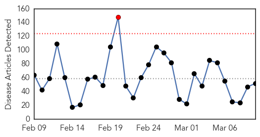
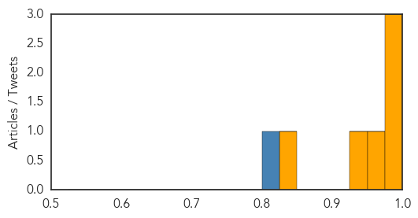

Unknown
30-Day Web Trend
1 alerts, 0 warnings

30-Day Twitter Trend
0 alerts, 0 warnings

Article Locations

Article Confidences

Top Articles:
- 0.967
- North Carolina health officials urge vigilance against norovirus
- 0.959
- Ugandan military joins fight against typhoid outbreak
- 0.926
- Tuberculosis
- 0.917
- Chicago Tribune
- 0.917
- Chicago Tribune
- 0.917
- Chicago Tribune
- 0.917
- Chicago Tribune
- 0.917
- Chicago Tribune
- 0.917
- Chicago Tribune
- 0.917
- Chicago Tribune
- 0.917
- Chicago Tribune
- 0.917
- Chicago Tribune
- 0.917
- Chicago Tribune
- 0.917
- Chicago Tribune
- 0.917
- Chicago Tribune
- 0.917
- Chicago Tribune
- 0.917
- Chicago Tribune
- 0.917
- Chicago Tribune
- 0.917
- Chicago Tribune
- 0.917
- Chicago Tribune
- 0.917
- Chicago Tribune
- 0.910
- The world windows to Thailand
- 0.898
- Radical Vaccine Design Effective Against Herpes Viruses
- 0.849
- Health Officials Report Bird Flu at Asbury Turkey Farm
- 0.840
- Genital Herpes Vaccine Shows Promise in Mouse Study
- 0.838
- Cordillera tops regions outside of Metro in kidney-related diseases
- 0.820
- Lack of Required Hospital Reporting Increases Superbug Danger
- 0.809
- State health officials urge caution regarding Norovirus
- 0.781
- Health officials recommend steps for private well owners to protect health, water
- 0.779
- Strengthening of Public Health Delivery System
- 0.759
- Hayward tuberculosis case draws health workers to school
- 0.709
- Ministry: More medical assistants soon - Nation
- 0.705
- Rabies risk high in East Texas
- 0.698
- Salmonella gastro not commonly spread person to person
- 0.685
- Sixth HIV-Positive Villager Dies in Battambang
- 0.629
- At Tulane Primate Center, federal investigators are back on the scene
- 0.619
- WHO boosts health services in Syria with 30 mobile clinics - Syrian Arab Republic
- 0.564
- City, State Assumed The Other Was Inspecting Hospital Kitchens « CBS Chicago
- 0.551
- Settle dispute over WWII ‘comfort women’, Merkel tells Japan
- 0.549
- Republican letter to Iran warns against deal with Obama
- 0.549
- Arms withdrawal on both sides nearly complete, Kiev says
- 0.549
- Ivory Coast's 'Iron Lady' jailed for 20 years over election violence
- 0.549
- French local elections: Why they matter
- 0.549
- EU sounds alarm over possible fraud at France’s National Front
- 0.549
- Clinton says ‘could have been smarter’ about emails
- 0.549
- Police in Burma charge at student protesters
- 0.543
- Cambodian PM urges people to avoid unlicensed doctors after recent HIV outbreak
- 0.538
- ‘Superbug’ outbreak in Washington state sparks changes at hospitals
- 0.537
- Overuse is weakening antibiotics
- 0.528
- Laser treatment for glaucoma introduced at GPHC -as the world celebrates World Glaucoma Week 2015
Showing top 50 articles...
Top Tweets:
- 0.563
- De vez en cuando recuerdo esta décima puertorriqueña... ¡Cuán falta de cariño debe estar aún! https://t.co/jUB994hV1r
- 0.527
- Flu may continue in parts of the U.S. for a few more weeks, but flu activity is on the downward curve. Nationally, flu activity has peaked.
- 0.511
- RT: Yo podré tener pareja y aún así seguiré masturbándome de vez en cuando.
Cholera
30-Day Web Trend
0 alerts, 0 warnings

30-Day Twitter Trend
8 alerts, 0 warnings

Article Locations

Article Confidences
Top Articles:
- 1.000
- Cholera cases rise to 12
- 0.997
- Zimbabwe at high risk of cholera outbreak: official --China Economic Net
- 0.981
- Zimbabwe Cholera Outbreak Forces South Africa to Shut Down Border Post - Zimbabwe
- 0.965
- Cholera outbreak forces South Africa to shut down Zim border post
- 0.929
- Zimbabwe cholera cases shoot up alarmingly
- 0.842
- Zimbabwe: Zimbabwe Cholera Outbreak Forces South Africa to Shut Down Border Post
Top Tweets:
- 0.801
- RT: Ebola was confused with cholera at an early stage.